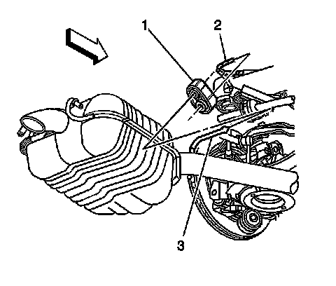

Exhaust System Insulator, Hanger, Bracket Replacement
Exhaust System Insulator, Hanger, Bracket Replacement
Service the exhaust hangers individually in order to retain the support of the exhaust system.
Removal Procedure
Caution: Refer to Exhaust Service Caution (Service Precautions) .
Caution: Refer to Protective Goggles and Glove Caution (Protective Goggles and Glove Warning) .
1. Raise and support the vehicle. Refer to Lifting and Jacking the Vehicle (Service and Repair) .

2. Pry the front exhaust hanger (1) free from the rear suspension hanger rod (2).
3. Apply a suitable lubricant to the exhaust pipe hanger rod (3) in order to ease the removal of the hanger (1).
4. Pry the front exhaust hanger (1) free from the exhaust pipe hanger rod (3).

5. Apply a suitable lubricant to the following in order to ease the removal of the hanger (2):
* The body support bracket rod (1)
* The tail pipe hanger rod (3)
6. Pry the tail pipe hanger (2) free from the tail pipe hanger rod (3).
7. Pry the tail pipe hanger (2) free from the body support bracket rod (1).
Installation Procedure
1. Apply a soapy solution to the following in order to ease the installation of the hanger:
* The body support bracket rod (1)
* The inner diameter of the tail pipe hanger (2)
* The tail pipe hanger rod (3)
2. Press the tail pipe hanger (2) over the tail pipe hanger rod (3).
3. Press the tail pipe hanger (2) over the body support bracket rod (1).
4. Apply a soapy solution to the exhaust pipe hanger rod (3) and the inner diameter of the front exhaust hanger (1) in order to ease the installation of the hanger (1).
5. Press the front exhaust hanger (1) over the exhaust pipe hanger rod (3).
6. Press the front exhaust hanger (1) over the rear suspension hanger rod (2).
7. Lower the vehicle.